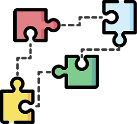
Azets is an international financial advisory group. The project focused on moving the content management system (CMS) platform from Umbraco to Optimizely. With this overhaul, Azets’ design goal was to consolidate and improve their UI/UX throughout their 11 websites.
Azets is present in 7 different countries. One of the first points of contact with their customers is the website.
There are three main groups of users in this project. The private customers, the corporate customers that are looking for a financial service or advisor, and the people looking to join the company. Each group has their unique flows with different points of entry.

The new website has one common architecture and layout, regardless of the country you access it from. One library was created to share design patterns and UI components. And so the design is consolidated and the UX patterns are aligned.
Optimizely works with “blocks” so Azets can build future pages as needed from the designed templates. The blocks’ content can be modified but the design is maintained. The flexibility of content was essential to account for the different markets and the regions.
This team worked remotely. We were all located in different cities and countries, so all our meetings and work was done through teams and Figma (for me).
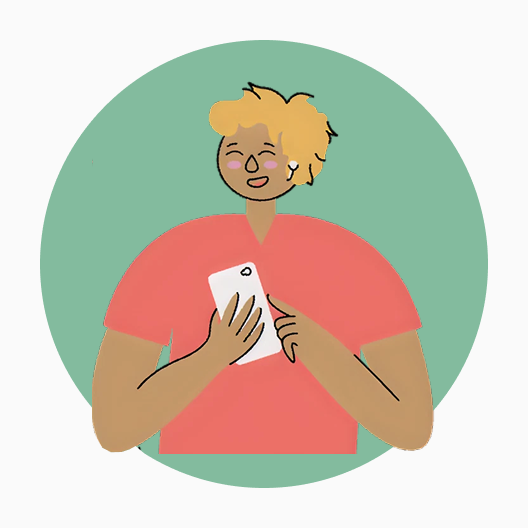
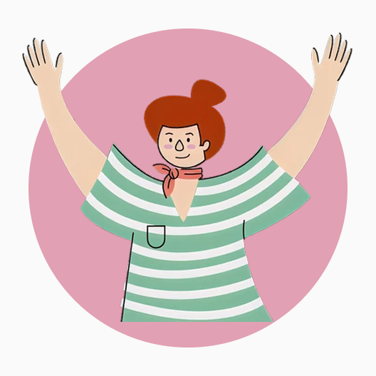
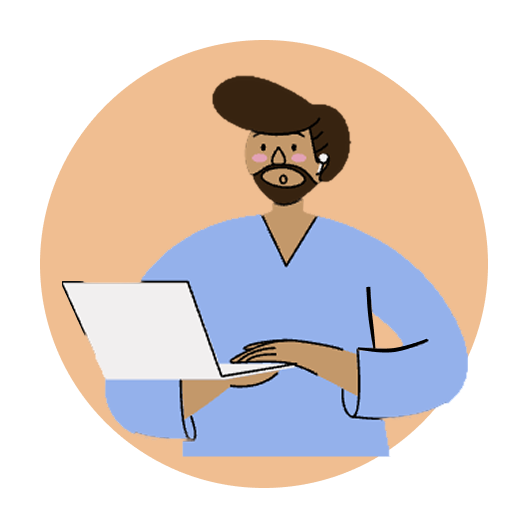
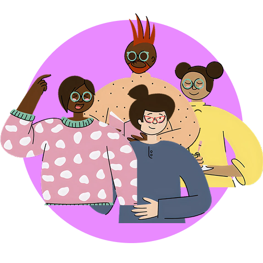
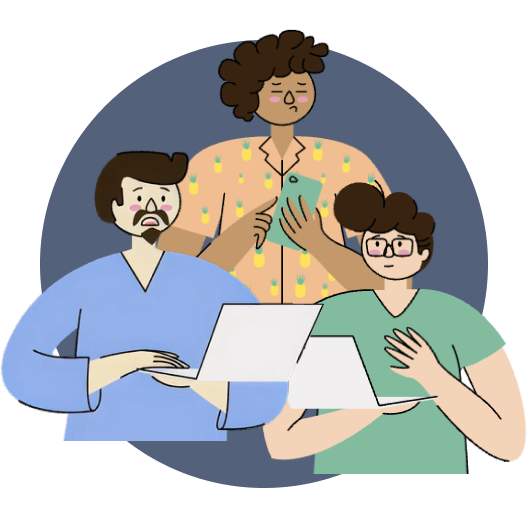

This project started with a meeting with the marketing lead, the PM, and the PO. In the meeting, they explained and shared their expectations and perceived needs. The company had around 11 websites, which included a global website, websites for the Nordics, Baltics, Ireland, and UK. The plan was to do the implementations in waves, the first UK and Ireland, the second the Nordics.
I started with the mapping of the websites, so I could find the components and features that the websites had in common. With this I could compare their different patterns, and know which ones were essential, and which ones could be changed or integrated in other features so the redesign would work for every country.
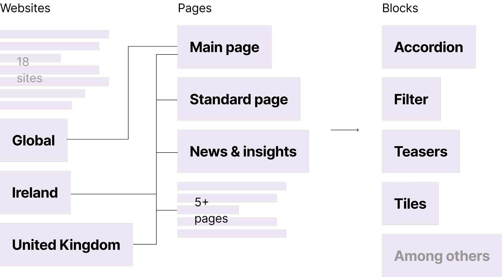
We then held workshops with the different country teams. Four different workshops where we covered user personas, expectations, pain points, essential functions, and areas of opportunity. Some regions also had web analytics, which they shared, this made easier to pinpoint existing patterns that were not used or confusing to the user. After the workshop I analysed the information and with the steering group, decided on the key pages, blocks and functions to develop. A priority list was defined and I could start the Figma work.
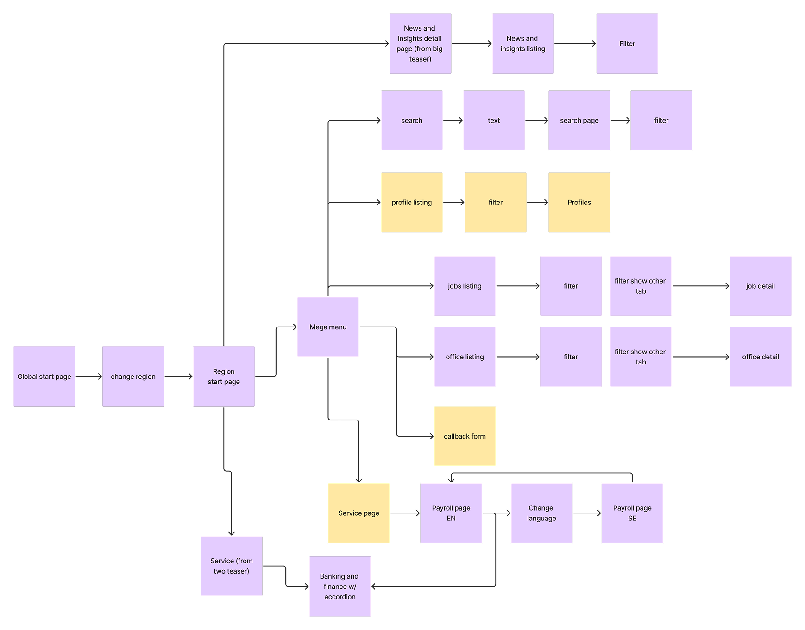
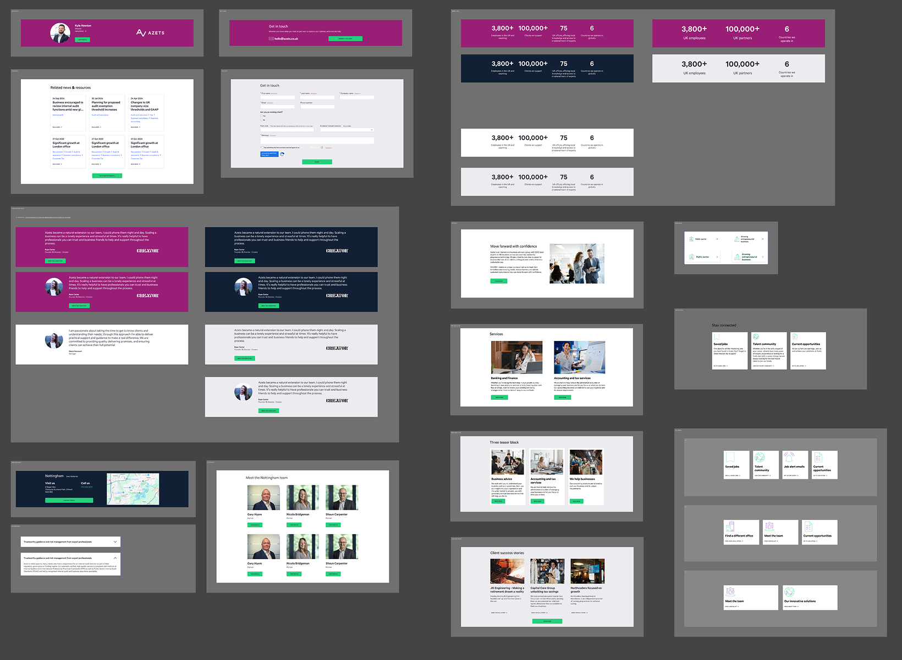
In general the develop stage of my design process for this project was: Design three different medium fidelity wireframes for the specific “block”, or sections to develop of one webpage. Get feedback from dev team and management. Iterate and adjust, confirm changes through more feedback and create a high fidelity prototype of the webpage. This happened for each page until we had all the pages for the new website.
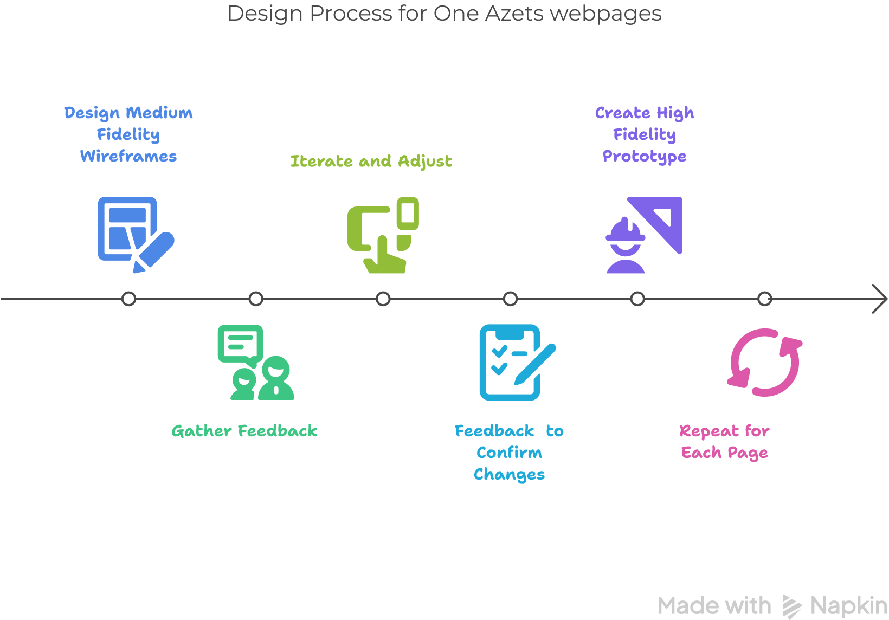
Once I had an approved high fidelity prototype of the website I had 5 different showcases, with the country teams and the corporate leaders. From their feedback a final iteration was made and I delivered the design to the development team.
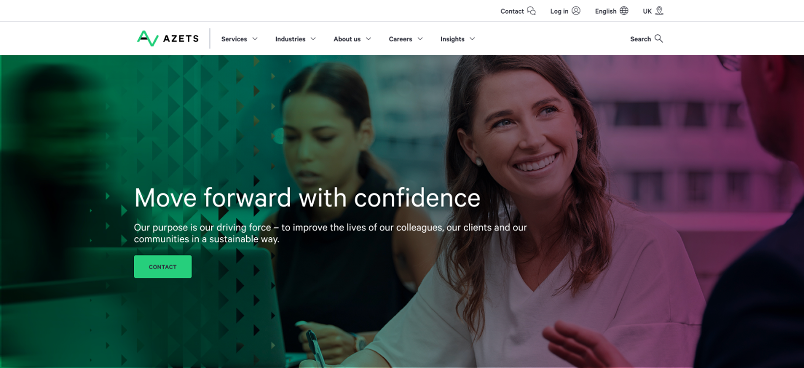
Changed the hero video banner + carrousel into a static banner.
The navigation menu is active on click instead of on hover to comply with WCAG.
Added animations to different blocks to make the website more dynamic.
Align all the teams from the start. Know all the stakeholders involved in the projects. This way their involvement can be planned properly. Otherwise unplanned changes and extra work hours might be needed to accommodate the unplanned team’s work.
Streamline the communication. When working in a fully remote team it’s essential to have clear, direct channels of communication. And that these channels are clear for everyone involved in the project.
Document meetings especially if decision taking was involved. Be sure that all design decisions are documented and accessible to the team. It’s good to be able to find the reasoning for decisions made during meetings.